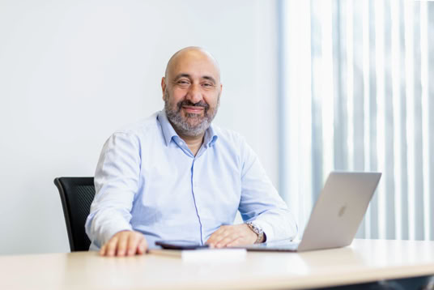

Marco Aiello

The boring biography
Professor of Computer Science, Head of the Service Computing Department, and Vice-Dean of Faculty V at the University of Stuttgart, Germany. An elected member of the European Academy of Sciences and Arts, Fellow of AAIA, Global Affiliated Research Faculty at Chang Gung University, Taipei, Taiwan. He is vice-president of Informatics Europe. He is the Editor-in-Chief of IEEE Transactions on Service Computing and member of the Steering Committee of the ICSOC Conference serie. He holds a PhD in Logic from the University of Amsterdam, the Habilitation in Applied Informatics from TU Wien, and a master's degree in Engineering from La Sapienza University of Rome. In 2016, together with three former Ph.D. students, he founded the company SustainableBuildings BV, acquired in 2020 by the Dutch energy company Innova BV. His research interests are in Service Computing, Smart Energy Systems, and Spatial Reasoning. He has authored over 200 peer-reviewed articles and several books, which have been cited more than 9.000 times.
The exaggerated biography
Marco Aiello, the legendary professor of service computing at the University of Stuttgart, holds the unique distinction of being the only one on campus who doesn't dream (or lecture) in German. He's penned not one, but two bestsellers that even his mother loves. Sporting an H-index on Google Scholar that's higher than the number of times he's been asked to explain what an H-index actually means, Marco is the undisputed heavyweight champion of citations in his own research topic. But wait, there's more! Marco didn't just rest on his academic laurels; he transformed his brainwaves into a startup so revolutionary that it was acquired by Innova BV for a sum so vast that it's whispered about in hushed tones at Silicon Valley cocktail parties. An undeniable jack-of-all-trades, Marco can—and will—give a spellbinding lecture on literally anything, from power grid statistics to how to cook a carbonara without cream, particularly if there's a shiny speaker's fee glittering on the horizon.
The modest biography
Marco Aiello found himself in Stuttgart sitting on, and holding tightly to, a service computing chair. Blessed by this turn of events, he felt obliged to publish some papers that are sometimes cited by people who obviously have never read them, and if they did, they largely overestimated the impact of the results presented therein. Some students insist on considering him their PhD advisor. 20 have freed themselves from this state of affairs by earning a PhD and finding a job as far as possible from him, about five haven’t—yet.
The LinkedIn style biography
Marco Aiello is thrilled to announce that he has received no award whatsoever today, which leaves him in the mildly confused state of holding exactly the same job he had yesterday: Professor of Service Computing at the University of Stuttgart. He is deeply honored to be entrusted with responsibilities he assigned to himself, truly grateful for opportunities he personally generated, and extremely excited about projects and roles he vaguely remembers agreeing to. He is ecstatic that his H-index, much like an elephant, continues to rise slowly and majestically without requiring any effort from him, aside from the noble academic tradition of inserting a few self-citations into every manuscript he submits. Above all, Marco is honored beyond measure to wake up every day and cultivate his favourite hobby: reading LinkedIn posts about other people’s work achievements and feeling profoundly jealous of every single one of them, no matter how insignificant they might be.
This website makes use of cookies. Please see our privacy policy for details.